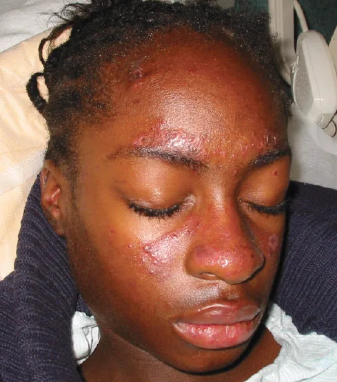
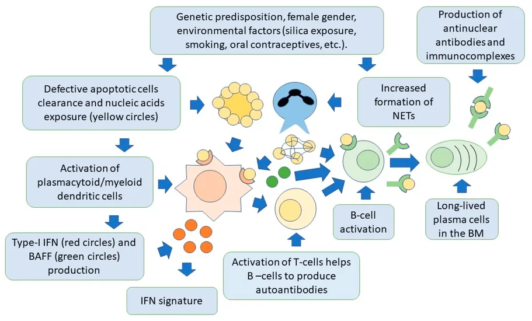
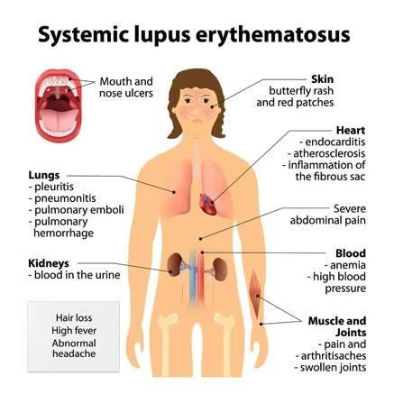
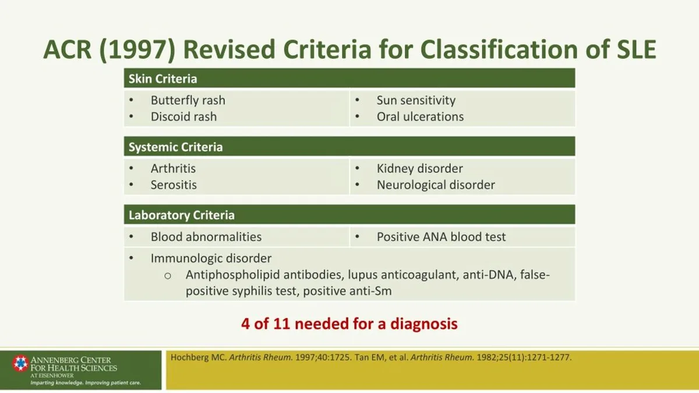
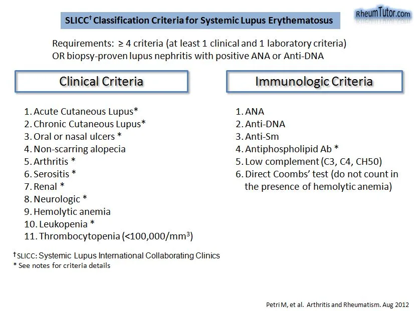
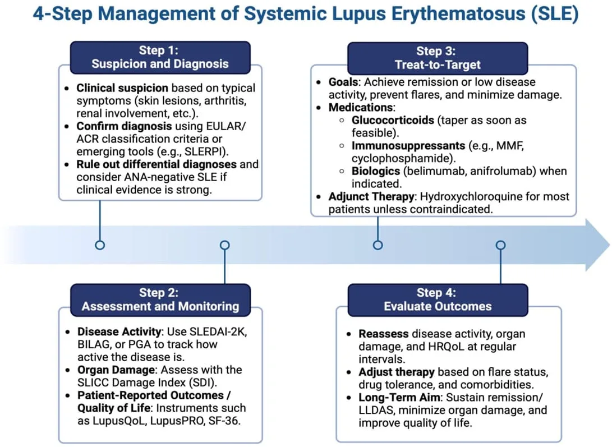
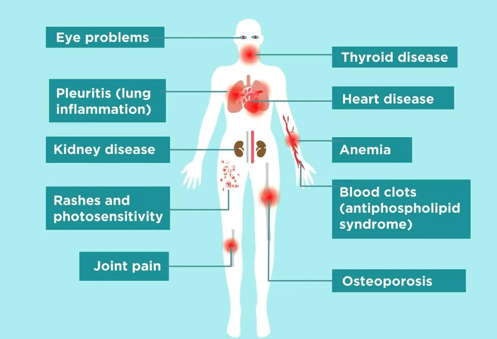

Expanded Nursing Uganda Explanation
Systemic Lupus Erythematosus (SLE) should be understood beyond a short definition. Link the concept to patient history, focused assessment, common risks, nursing priorities, documentation and evaluation of outcomes.
01 Overview
Systemic Lupus Erythematosus (SLE), often simply called lupus, is a chronic, autoimmune disease characterized by systemic inflammation that can affect virtually any organ system in the body.
Systemic Lupus Erythematosus is a chronic autoimmune disease in which the immune system attacks its own tissues, causing widespread inflammation and tissue damage in the affected organs.
- Systemic: Implies that the disease can affect multiple organ systems throughout the body, not just a single localized area. This broad involvement distinguishes it from other forms of lupus, such as cutaneous lupus erythematosus, which primarily affects the skin.
- Lupus: Derived from the Latin word for "wolf," historically used to describe the characteristic facial rash that was once thought to resemble a wolf's bite.
- Erythematosus: Refers to the redness, or erythema, often seen in the skin rashes associated with the disease.
- Autoimmune: The fundamental pathological process where the immune system loses its ability to differentiate between "self" and "non-self" and mounts an attack against the body's own cells and tissues. This involves the production of autoantibodies that target components of the body's cells, leading to immune complex formation and subsequent inflammation and damage.
It is a prototype of autoimmune diseases, meaning the body's immune system, which normally protects against foreign invaders, mistakenly attacks its own healthy tissues. This leads to widespread inflammation and tissue damage.
It can affect the joints, skin, brain, lungs, kidneys, and blood vessels.
SLE is a relatively common autoimmune disease, but its prevalence and incidence vary significantly across different populations.
Prevalence: The number of existing cases in a population at a specific time. Estimates vary, but generally range from 20 to 150 cases per 100,000 people worldwide. Some studies suggest higher figures, particularly in specific ethnic groups.
- Gender: SLE predominantly affects females . The female-to-male ratio is strikingly high, up to 9:1 during childbearing years (15-45 years). This ratio narrows before puberty (approximately 3:1) and after menopause (approximately 8:1), suggesting a significant hormonal influence, particularly involving estrogen.
- Age of Onset: Most commonly manifests during reproductive years , between the ages of 15 and 45 . Childhood-onset SLE (cSLE) is generally more severe than adult-onset SLE.
- Ethnicity/Race: SLE is more prevalent and often more severe in individuals of African, Hispanic/Latino, Asian, and Native American descent compared to Caucasians. For example, in the United States, African Americans are 2-4 times more likely to develop SLE than Caucasians, and their disease often presents with greater severity, particularly involving the kidneys (lupus nephritis).
- Geography: Higher prevalence is observed in lower latitude regions, which may suggest an environmental component related to UV exposure, though this is not fully understood.
It is believed that individuals with a genetic susceptibility are exposed to environmental factors that trigger an abnormal immune response, leading to the characteristic features of the disease.
While the exact cause of SLE is unknown, several factors are recognized as contributing to its development:
- Family History: There is a clear genetic component, as SLE tends to run in families. First-degree relatives of individuals with SLE have an increased risk of developing the disease or other autoimmune conditions.
- HLA Genes: The strongest genetic associations are with genes within the Major Histocompatibility Complex (MHC) , particularly certain HLA (Human Leukocyte Antigen) class II alleles , such as HLA-DR2 and HLA-DR3 . These genes are involved in presenting antigens to T cells.
- Non-HLA Genes: Numerous other non-HLA genes are also implicated, each contributing a small risk. These include genes involved in: Immune regulation: E.g., genes for complement components (C1q, C2, C4 deficiencies are strongly associated with SLE, as complement plays a role in clearing immune complexes and apoptotic cells).
- Interferon pathways: (e.g., IRF5, STAT4 ).
- B and T cell signaling: (e.g., PTPN22, BLK, LYN ).
- Apoptosis: (e.g., TNFRSF6B ).
- Polygenic Disorder: SLE is considered a polygenic disorder, meaning that the cumulative effect of multiple susceptibility genes, rather than a single gene, contributes to the risk.
- Ultraviolet (UV) Light Exposure: A well-established trigger. UV light can induce apoptosis (programmed cell death) in skin cells and alter DNA, making nuclear antigens more accessible and immunogenic. It can also activate keratinocytes to produce pro-inflammatory cytokines.
- Infections: Viral infections (e.g., Epstein-Barr Virus - EBV) have been hypothesized to act as triggers in genetically susceptible individuals, possibly through molecular mimicry (where viral antigens resemble self-antigens) or by promoting inflammation and immune activation.
- Medications: Certain drugs can induce a lupus-like syndrome known as drug-induced lupus erythematosus (DIL) . Common culprits include procainamide, hydralazine, isoniazid, and minocycline. DIL typically resolves after discontinuation of the offending drug and is usually less severe than idiopathic SLE, rarely involving the kidneys or central nervous system.
- Smoking: Associated with an increased risk of SLE and may worsen disease activity.
- Silica Dust Exposure: Occupational exposure to silica has been linked to an increased risk of SLE.
- Estrogen: The strong female predominance of SLE, particularly during reproductive years, suggests a significant role for female hormones, especially estrogen. Estrogen can modulate immune responses, enhancing antibody production and promoting certain inflammatory pathways.
- Pregnancy: Can alter disease activity, with some women experiencing flares during pregnancy or postpartum.
The pathogenesis of SLE involves a cascade of events leading to the breakdown of immune tolerance and sustained autoimmune responses.
- Aberrant Apoptosis and Impaired Clearance of Apoptotic Debris: In healthy individuals, apoptotic cells are efficiently cleared. In SLE, there is increased apoptosis and/or defective clearance of apoptotic cells. This leads to an accumulation of apoptotic cellular material containing nuclear antigens (e.g., DNA, histones, ribonucleoproteins).
- Exposure of Nuclear Antigens and Immune Activation: The accumulated apoptotic debris exposes normally sequestered nuclear and cytoplasmic components (self-antigens) to the immune system. This triggers innate immune responses (e.g., activation of dendritic cells and plasmacytoid dendritic cells, which produce large amounts of type I interferons). Type I interferons (especially IFN-α) are central to SLE pathogenesis, promoting the activation of B cells, T cells, and other immune cells.
- Loss of Immune Tolerance and Autoantibody Production: Genetically susceptible individuals, upon exposure to these self-antigens, fail to maintain immune tolerance. B Cell Hyperactivity: There is a fundamental dysregulation of B cells, leading to their hyperactivation and uncontrolled production of a vast array of autoantibodies. These include: Antinuclear Antibodies (ANAs): Present in >95% of SLE patients and are a hallmark of the disease. They target components within the cell nucleus.
- Anti-double-stranded DNA (anti-dsDNA) antibodies: Highly specific for SLE and often correlate with disease activity, particularly lupus nephritis.
- Anti-Sm (Smith) antibodies: Also highly specific for SLE.
- Anti-Ro (SSA) and Anti-La (SSB) antibodies: Associated with Sjögren's syndrome, neonatal lupus, and cutaneous lupus.
- Antiphospholipid antibodies: (e.g., lupus anticoagulant, anti-cardiolipin, anti-beta2-glycoprotein I) associated with thrombosis and pregnancy complications.
- Anti-histone antibodies: Common in drug-induced lupus.
- T Cell Dysregulation: T cells also exhibit abnormalities, providing inappropriate help to B cells and directly contributing to inflammation.
- Immune Complex Formation and Tissue Damage: Autoantibodies bind to their target self-antigens, forming immune complexes . These immune complexes circulate in the bloodstream and can deposit in various tissues, such as the kidneys (glomeruli), skin, joints, blood vessels, and serosal membranes (e.g., pleura, pericardium). The deposition of immune complexes activates the complement system (a part of the innate immune response), leading to the generation of pro-inflammatory mediators and direct cell lysis. This complement activation, along with the recruitment of inflammatory cells (neutrophils, macrophages), results in chronic inflammation and widespread tissue damage in the affected organs.
NB: This tissue damage due to immune complexes it is referred to as a TYPE 3 HYPERSENSITIVE REACTION.
If the patient develops antibodies targeting other cells like Red and White blood cells, and phospholipid molecules, which can mark them for Phagocytosis and Destruction, this, then, is a TYPE 2 HYPERSENSITIVITY REACTION.
Systemic Lupus Erythematosus (SLE) is renowned for its diverse and often fluctuating clinical manifestations, earning it the moniker "the great imitator."
These are often the first and most common symptoms, frequently preceding more specific organ involvement.
- Fatigue: Profound and debilitating fatigue is one of the most common and distressing symptoms, significantly impacting quality of life.
- Fever: Low-grade fever, often unexplained by infection.
- Weight Loss: Unexplained and often unintentional weight loss.
- Malaise: A general feeling of discomfort, illness, or uneasiness.
- Arthralgia (Joint Pain): Present in over 90% of patients. Often migratory, symmetric, and affecting small joints of the hands, wrists, and knees. Pain is usually inflammatory in nature (worse with rest, better with activity).
- Arthritis: Inflammatory arthritis with swelling and tenderness, but typically non-erosive and non-deforming , meaning it doesn't cause permanent joint damage like rheumatoid arthritis.
- Myalgia (Muscle Pain) and Myositis (Muscle Inflammation): Muscle pain and weakness can occur, sometimes due to true inflammation of the muscle tissue (myositis).
- Tendonitis and Tenosynovitis: Inflammation of tendons and tendon sheaths.
- Avascular Necrosis (Osteonecrosis): Can occur, particularly in patients on long-term corticosteroid therapy, affecting areas like the femoral head (hip).
Skin manifestations present in about 80% of SLE patients.
- Specific Cutaneous Lupus: Malar Rash ("Butterfly Rash"): Erythematous, flat or raised rash over the cheeks and nasal bridge, typically sparing the nasolabial folds. Often exacerbated by sun exposure.
- Discoid Lupus Erythematosus: Raised, erythematous patches with adherent scaling and follicular plugging, leading to scarring, atrophy, and permanent alopecia (hair loss). Can occur on sun-exposed areas.
- Subacute Cutaneous Lupus Erythematosus (SCLE): Non-scarring, photosensitive rash with papulosquamous (psoriasiform) or annular (ring-shaped) lesions.
- Non-Specific Cutaneous Manifestations: Photosensitivity: Exaggerated skin reaction (rash, sunburn) to sunlight or UV light exposure.
- Oral/Nasal Ulcers: Painless or mildly painful ulcers in the mouth or nose.
- Alopecia: Non-scarring hair loss (diffuse thinning or patchy) can occur, often during active disease flares.
- Raynaud's Phenomenon: Spasm of blood vessels in the fingers and toes, leading to color changes (white, blue, red) upon exposure to cold or stress.
- Livedo Reticularis: Lacy, purplish discoloration of the skin, often in the extremities, due to impaired blood flow.
- Vasculitis: Inflammation of blood vessels, manifesting as palpable purpura, ulcerations, or nail fold infarcts.
- Perifungal Erythema: Redness around the nails.
- Lupus nephritis is a serious complication, occurring in up to 50-60% of SLE patients and is a major cause of morbidity and mortality.
- Manifestations: Can range from asymptomatic proteinuria or hematuria to severe renal failure requiring dialysis or transplantation.
- Signs: Peripheral edema, hypertension, foamy urine (due to proteinuria).
- Diagnosis: Often requires a kidney biopsy to determine the class of nephritis and guide treatment.
- Anemia: Anemia of chronic disease is common. Autoimmune hemolytic anemia (destruction of red blood cells by autoantibodies) can also occur.
- Leukopenia/Lymphopenia: Low white blood cell count, particularly lymphocytes, is common.
- Thrombocytopenia: Low platelet count, increasing the risk of bleeding.
- Neutropenia: Low neutrophil count, increasing infection risk.
- Splenomegaly: Enlarged spleen.
- Lymphadenopathy: Enlarged lymph nodes.
- A wide range of neurological and psychiatric symptoms can occur, often challenging to diagnose.
- Common: Headaches (including migraines), mood disorders (depression, anxiety), cognitive dysfunction ("lupus fog" - impaired memory, concentration).
- Serious: Seizures, psychosis, stroke, transverse myelitis (inflammation of the spinal cord), aseptic meningitis, peripheral neuropathies.
- Serositis: Inflammation of the serous membranes (linings of organs). Pleurisy: Inflammation of the pleura (lung lining), causing chest pain, often worse with deep breath (pleuritic chest pain). Can lead to pleural effusions.
- Pericarditis: Inflammation of the pericardium (heart lining), causing chest pain that improves when leaning forward. Can lead to pericardial effusions.
- Myocarditis: Inflammation of the heart muscle, leading to heart failure or arrhythmias.
- Endocarditis (Libman-Sacks Endocarditis): Non-infectious vegetations on heart valves, most commonly mitral or aortic, which can be a source of emboli.
- Pulmonary Hypertension: High blood pressure in the arteries to the lungs.
- Interstitial Lung Disease: Inflammation and scarring of the lung tissue.
- Vasculitis: Inflammation of blood vessels in the lungs.
- Nausea, Vomiting, Diarrhea: Common non-specific symptoms.
- Abdominal Pain: Can be due to serositis, vasculitis of the bowel, pancreatitis, or liver involvement.
- Hepatomegaly: Enlarged liver.
- Retinal Vasculitis: Inflammation of blood vessels in the retina, potentially leading to vision loss.
- Sicca Syndrome (Dry Eyes/Mouth): Similar to Sjögren's syndrome, due to lymphocytic infiltration of lacrimal and salivary glands.
- Optic Neuritis: Inflammation of the optic nerve.
- Increased risk of: Miscarriage, premature birth, preeclampsia, and fetal growth restriction.
- Anti-Ro/SSA antibodies can cause neonatal lupus in infants, presenting with rash, liver problems, and congenital heart block.
There is no single diagnostic test for SLE; instead, diagnosis relies on a combination of characteristic clinical features, specific autoantibody profiles, and exclusion of other conditions.
These criteria emphasize objective clinical findings, and a patient is classified as having SLE if they meet at least 4 criteria , including at least one clinical criterion and one immunological criterion. Alternatively, if they have biopsy-proven lupus nephritis with positive ANA or anti-dsDNA.
- Acute Cutaneous Lupus: Malar rash (butterfly rash), bullous lupus, toxic epidermal necrolysis variant, maculopapular lupus rash, photosensitive lupus rash (in absence of dermatomyositis).
- Chronic Cutaneous Lupus: Discoid lupus erythematosus, hypertrophic lupus, panniculitis (lupus profundus), mucosal lupus, lupus erythematosus tumidus, chilblain lupus, discoid lupus/lichen planus overlap.
- Oral or Nasal Ulcers: Oral or nasal ulcers (in absence of other causes).
- Non-scarring Alopecia: Diffuse thinning or hair fragility with visible broken hairs (in absence of other causes).
- Synovitis: Involving two or more joints, characterized by swelling or tenderness and at least 30 minutes of morning stiffness.
- Serositis: Pleurisy (pleural rub, pleural effusion, or pleural thickening)
- Pericarditis (pericardial rub, pericardial effusion, or ECG evidence)
- Renal Involvement (Lupus Nephritis): Urine protein-to-creatinine ratio (or 24-hour urine protein) > 0.5 g/24 hours
- Red blood cell casts in urine
- Neurologic Involvement: Seizures
- Psychosis
- Myelitis
- Peripheral or cranial neuropathy
- Acute confusional state
- Hemolytic Anemia:
- Leukopenia: < 4,000/mm³ on at least one occasion (in absence of other causes).
- Lymphopenia: < 1,000/mm³ on at least one occasion (in absence of other causes).
- Thrombocytopenia: < 100,000/mm³ on at least one occasion (in absence of other causes).
These are critical for confirming the autoimmune nature of the disease.
- Antinuclear Antibodies (ANA): Positive ANA: A positive ANA (usually by indirect immunofluorescence on HEp-2 cells) at a significant titer (e.g., ≥ 1:80 or 1:160) is a prerequisite for diagnosing SLE (present in >95% of patients).
- Important Note: A positive ANA alone is not diagnostic of SLE, as it can be positive in healthy individuals, other autoimmune diseases, and some infections. However, a negative ANA reliably rules out SLE in most cases.
- Anti-double-stranded DNA (anti-dsDNA) Antibodies: Highly specific for SLE.
- Often correlates with disease activity, particularly lupus nephritis.
- Detected by ELISA or Crithidia luciliae immunofluorescence test (CLIFT).
- Anti-Sm (Smith) Antibodies: Highly specific for SLE.
- Its presence is almost pathognomonic for SLE.
- Antiphospholipid Antibodies: Lupus anticoagulant
- Anti-cardiolipin antibodies (IgA, IgG, or IgM)
- Anti-beta2-glycoprotein I antibodies (IgA, IgG, or IgM)
- These indicate an increased risk for thrombosis (blood clots) and pregnancy complications.
- Low Complement Levels: Low C3 and/or C4: Decreased levels of complement proteins (C3 and C4) due to consumption by immune complexes are indicative of active disease, especially renal involvement.
- Low CH50: Measures total hemolytic complement activity, reflecting the overall function of the classical complement pathway.
- Direct Coombs' Test (in absence of hemolytic anemia): A positive test indicates antibodies against red blood cells. If hemolytic anemia is present, this counts as a clinical criterion.
These help assess disease activity, monitor organ involvement, and rule out other conditions.
- Inflammatory Markers: Erythrocyte Sedimentation Rate (ESR): Often elevated during disease flares, but can be normal even in active SLE.
- C-Reactive Protein (CRP): Usually not as elevated in SLE as in other inflammatory conditions, unless there is serositis, synovitis, or concurrent infection. A high CRP in an SLE patient should prompt a search for infection.
- Complete Blood Count (CBC): To check for anemia, leukopenia, lymphopenia, and thrombocytopenia.
- Renal Function Tests: Serum creatinine, blood urea nitrogen (BUN), urinalysis (for proteinuria, hematuria, red blood cell casts) to assess kidney function.
- Liver Function Tests (LFTs): To assess for liver involvement.
- Thyroid Function Tests: Autoimmune thyroid disease is more common in SLE patients.
Imaging is used to assess specific organ involvement or complications.
- Chest X-ray/CT Scan: To evaluate for pleural effusions, interstitial lung disease, or other pulmonary complications.
- Echocardiogram: To assess for pericardial effusion, valvular disease (e.g., Libman-Sacks endocarditis), or myocardial involvement.
- MRI of Brain: If neurologic symptoms (e.g., seizures, stroke, cognitive dysfunction) are present, to look for lesions, inflammation, or vascular changes.
- Joint X-rays: Usually normal in SLE arthritis (non-erosive), but can help differentiate from erosive arthritis (e.g., rheumatoid arthritis).
- Kidney Biopsy: Crucial for diagnosing and classifying lupus nephritis. It provides vital information on the type, severity, and chronicity of kidney involvement, guiding treatment decisions and predicting prognosis. Recommended for patients with significant proteinuria or evidence of active nephritis.
It's vital to rule out other conditions that can mimic SLE, such as:
- Other connective tissue diseases (e.g., Sjögren's syndrome, rheumatoid arthritis, systemic sclerosis).
- Infections (e.g., chronic viral infections).
- Malignancies.
- Drug-induced lupus.
The management of Systemic Lupus Erythematosus (SLE) is highly individualized with the following aims ,
- ensure long-term survival,
- achieve the lowest possible disease activity,
- prevent organ damage,
- minimize drug toxicity, and improve quality of life.
Mild cases are defined as having one or two organ involvement with minimal complications. Moderate cases involve more than two organs with low-grade involvement, or one to two organs with more extensive involvement. Severe cases present with life-threatening complications and multiple (more than two) organ involvements.
- Patient Education: Crucial for self-management, adherence to treatment, and understanding the disease.
- Sun Protection: Strict photoprotection (sunscreen SPF 30+, protective clothing, avoiding peak sun hours) is essential to prevent flares, especially of cutaneous lupus.
- Smoking Cessation: Smoking exacerbates disease activity, increases cardiovascular risk, and may reduce treatment efficacy.
- Healthy Lifestyle: Regular exercise (as tolerated), balanced diet, adequate sleep (more than 8 hours to prevent exhaustion), and stress management (avoid overworking, emotional stress, and use techniques to help prevent stress).
- Routine Monitoring: Regular clinical visits and laboratory tests (CBC, renal function, autoantibodies, complement levels) to monitor disease activity, medication side effects, and screen for complications.
- Vaccinations: Patients with SLE, especially those on immunosuppressants, should be up-to-date on routine vaccinations (e.g., influenza, pneumococcal, HPV, shingles, COVID-19). Live vaccines are contraindicated for those on high-dose immunosuppression (e.g., shingles, MMR, intranasal flu, smallpox, rotavirus).
- Cardiovascular Risk Management: Proactive management of traditional cardiovascular risk factors (hypertension, dyslipidemia, diabetes) as SLE patients have an increased risk of premature atherosclerosis.
- Antibody Labs: Positive ANA (anti-nuclear antibodies), Anti-dsDNA (anti-double stranded DNA antibody), Anti-Sm antibody (Anti-Smith antibody).
- Inflammatory Markers: Elevated ESR (erythrocyte sedimentation rate) and CRP (c-reactive protein).
- General Labs: CBC, metabolic panel, urinalysis, complement levels (C3, C4) etc. for overall health and organ function.
To decrease occurrence of flares, protect organs/tissues/joints from damage, and improve quality of life.
- Women of childbearing age need to make sure their lupus has been in control for at least 6 months before conceiving. Pregnancy and the post-partum period can cause flares. Close monitoring and appropriate medication adjustments are critical.
- Triggers: Sunlight, stress, sickness, not taking medications correctly or needing an adjustment.
- Prevention: “LESS” Flares: Lower stress (avoid overworking, emotional stress, illness, and use techniques to help prevent stress).
- Exercise (helps joints and manages weight).
- Sleep (need more than 8 hours to prevent the body from getting too exhausted).
- Sun Protection (sunscreen and large-brimmed hats…sunlight can activate a flare).
Educate patient to keep a diary of symptoms to monitor for flares.
- Fatigue
- Low grade fever
- Achy joints
- Rash
- Edema of the legs and hands
Medications form the cornerstone of SLE treatment and are often used in combination. The goal is to achieve remission or low disease activity, prevent further organ damage, and improve the patient's quality of life, balancing efficacy with minimizing medication side effects.
- Antimalarials: Hydroxychloroquine (Plaquenil): 200 to 400 mg daily as a single daily dose or in 2 divided doses. Generally, all patients with any type of SLE manifestation should be treated with hydroxychloroquine regardless of the severity of the disease.
- Indications: Mild disease, cutaneous manifestations, arthralgia, fatigue. Also used as maintenance therapy for moderate to severe disease.
- Mechanism: Modulates immune function, reduces inflammation, and has antithrombotic and lipid-lowering effects.
- Benefits: Reduces flares, improves survival, decreases cumulative organ damage, and helps control dyslipidemia and thrombosis risk.
- Side Effects: Generally well-tolerated. Rare but serious side effect is retinal toxicity (maculopathy), requiring baseline and annual ophthalmologic screening (dose-dependent).
- Corticosteroids: Prednisone, Prednisolone, Methylprednisolone: Potent anti-inflammatory and immunosuppressive agents. Decreases inflammation quickly, but causes side effects. Used when the patient is not experiencing relief from other medications (severe cases).
- Indications: Moderate to severe disease flares, significant organ involvement (e.g., lupus nephritis, severe CNS lupus, severe hemolytic anemia, thrombocytopenia).
- Dosage: For acutely ill patients, intravenous methylprednisolone 0.5 to 1 g/day for three days may be used. For more stable patients, 1 to 2 mg/kg/day (e.g., prednisone oral 40-60 mg/day) may be initiated. Doses are tapered to the lowest effective dose for maintenance as quickly as possible to minimize side effects.
- Side Effects: Numerous and significant with long-term use (osteoporosis, weight gain, hypertension, diabetes, cataracts, glaucoma, infection risk, skin thinning, mood changes). Strategies to minimize use are crucial.
- Nonsteroidal Anti-inflammatory Drugs (NSAIDs): Indications: Mild arthralgia, myalgia, serositis, and fever. Decreases inflammation (helpful with fever, joint pain).
- Examples: Ibuprofen, Naproxen. For fever management, Celecoxib PO 100 to 200 mg twice daily or Acetaminophen 1000 mg every 6 hours (maximum daily dose: 3000 mg daily) can be used.
- Caution: Use with caution in patients with renal involvement, hypertension, or gastrointestinal ulcers, as NSAIDs can worsen these conditions.
- Immunosuppressants (Disease-Modifying Anti-Rheumatic Drugs - DMARDs): Suppresses the immune system (increases risk for infection and certain cancers). For severe cases of lupus and sometimes referred to as “steroid-sparing” meaning their use helps lower the amount of steroids the patient may have to take. Educate about preventing infection and monitoring self for infection because the medication regime for lupus (example: taking steroids as well) can prevent the signs and symptoms of infection appearing (example: fever).
- Methotrexate (MTX): Indications: Arthritis, skin disease, serositis.
- Side Effects: Nausea, liver toxicity, bone marrow suppression, lung toxicity. Folic acid supplementation helps reduce side effects.
- Azathioprine (AZA - Imuran): Indications: Lupus nephritis, maintenance therapy, polyarthritis, serositis, hematologic manifestations.
- Side Effects: Bone marrow suppression, liver toxicity, gastrointestinal upset, increased risk of infection. Requires monitoring of CBC and liver enzymes.
- Mycophenolate Mofetil (MMF - CellCept): Indications: First-line therapy for active lupus nephritis (especially proliferative and membranous forms), also used for other severe manifestations.
- Side Effects: Gastrointestinal upset (nausea, diarrhea), bone marrow suppression, increased risk of infection.
- Cyclophosphamide (CYC - Cytoxan): Indications: Severe, life-threatening manifestations (e.g., severe lupus nephritis, CNS lupus, diffuse alveolar hemorrhage). Used for induction therapy for active, severe disease.
- Side Effects: Severe and numerous (bone marrow suppression, hemorrhagic cystitis, infertility, alopecia, increased risk of infection and malignancy). Requires careful monitoring.
- Calcineurin Inhibitors (e.g., Cyclosporine, Tacrolimus): Indications: Used for lupus nephritis, particularly for patients who don't respond to standard therapies or have contraindications.
- Side Effects: Nephrotoxicity, hypertension, increased infection risk.
- Biologic Agents: Belimumab (Benlysta): Binds with a protein that supports the activity of B-cells to decrease the activity of B-cells, resulting in decreased antibody attacks and decreased inflammation. No LIVE vaccines should be given. Indications: Approved for autoantibody-positive SLE patients receiving standard therapy, particularly those with active disease but without severe active lupus nephritis or CNS lupus.
- Side Effects: Nausea, diarrhea, infusion reactions, depression/insomnia, increased infection risk.
- Rituximab (Rituxan): Indications: Not FDA-approved for SLE but used off-label for refractory severe SLE (e.g., severe nephritis, hematologic manifestations) that has not responded to other treatments.
- Mechanism: Monoclonal antibody that depletes CD20-positive B cells.
- Side Effects: Infusion reactions, increased infection risk (PML - progressive multifocal leukoencephalopathy, rarely).
- Anifrolumab (Saphnelo): Indications: Recently approved for adults with moderate to severe active SLE who are receiving standard therapy.
- Mechanism: Monoclonal antibody that blocks the type I interferon receptor, reducing the activity of type I interferons.
- Side Effects: Infusion reactions, upper respiratory tract infections, herpes zoster.
- Lupus Nephritis: Induction Therapy: High-dose corticosteroids (often IV methylprednisolone pulses) combined with mycophenolate mofetil or cyclophosphamide.
- Maintenance Therapy: Mycophenolate mofetil or azathioprine, often with low-dose oral corticosteroids.
- Aggressive Antihypertensive Therapy: With a blood pressure goal of 130/85 . In patients with proteinuria, antiproteinuric therapy with blockade of the renin-angiotensin system, including ACE inhibitors (e.g., Captopril PO 25 mg 3 times daily) and ARBs (e.g., Losartan PO initial: 50 mg once daily; can be increased to 100 mg once daily) , is recommended.
- Neuropsychiatric Lupus: High-dose corticosteroids, immunosuppressants (cyclophosphamide), or biologics depending on the specific manifestation (e.g., psychosis, seizures, severe cognitive dysfunction).
- Symptomatic treatment for headaches, depression, anxiety.
- Hematologic Manifestations: Corticosteroids for severe anemia or thrombocytopenia. Immunosuppressants are steroid-resistant.
- Cutaneous Lupus Erythematosus: High potency topical steroid twice daily for patients with CLE. For facial involvement, Hydrocortisone 1% or 2.5% can be used. Hydroxychloroquine is a first-line systemic treatment.
- Raynaud’s Phenomenon: Treated with a Calcium channel blocker (e.g., Nifedipine) 10 to 30 mg 3 times daily.
- Chronic Pain Management: Moderate pain: Mild prescription opioids such as Co-codamol (Acetaminophen (300 to 1,000 mg/dose)/codeine (15 to 60 mg/dose) every 4 hours as needed; adjust dose according to severity of pain and response of patient (maximum: acetaminophen 4,000 mg/codeine 360 mg per 24 hours)) .
- Moderate to severe chronic pain: Stronger opioids such as Hydrocodone (single doses >40 mg or >60 mg with a total daily dose ≥80 mg) . These should be used with caution due to risks of dependence and side effects.
- Vitamin D and Calcium Supplements: Essential for preventing osteoporosis, particularly in patients using corticosteroids.
- Bisphosphonates: For steroid-induced osteoporosis.
- Proton Pump Inhibitors (PPIs): To protect the stomach in patients on NSAIDs or high-dose steroids.
02 Nursing Uganda Clinical Lens
Use Systemic Lupus Erythematosus (SLE) as a practical nursing topic, not only a memorized definition. Connect structure, movement, pain, circulation, nerve function and safe mobility.
- What to understand first: define systemic lupus erythematosus (sle), identify the normal or expected pattern, then explain what changes when the patient is unwell.
- Why it matters in care: the nurse must recognize risk early, explain findings clearly, document accurately and know when to escalate.
- How to revise it: connect each point to assessment, nursing diagnosis or care problem, intervention, rationale and evaluation.
03 Assessment Guide
- Pain score, site, onset, deformity, swelling, bruising and ability to move.
- Distal pulse, capillary refill, colour, warmth, sensation and movement.
- Skin integrity, wounds, cast tightness, traction alignment and pressure areas.
04 Nursing Priorities, Rationales and Outcomes
- Immobilize and protect the affected part while preventing further injury.
- Control pain and swelling while monitoring neurovascular status.
- Prevent complications such as compartment syndrome, infection, pressure injury and venous stasis.
The rationale for these priorities is patient safety: nursing actions should prevent deterioration, reduce discomfort, support recovery and create clear evidence for the next caregiver.
- Expected outcome: Pain is reduced, circulation and sensation remain intact, swelling is controlled and the patient mobilizes safely within the care plan.
05 Patient Teaching and Revision Check
- Explain systemic lupus erythematosus (sle) in simple language the patient or caregiver can repeat back.
- Teach warning signs, medicine or follow-up instructions, hygiene or lifestyle points where relevant.
- For exams, prepare a short answer using: definition, causes or risk factors, signs, assessment, management, complications and prevention.
- For ward practice, document baseline findings, actions taken, patient response and the plan for review.
Illustrations and Diagrams (10)








2 more diagrams available, open the lesson for full illustrations.
Related Video Lectures
Watch nursing lecture videos on YouTube for this topic. Opens in a new tab.
Watch on YouTubeExternal link: YouTube may use its own cookies and terms. Nursing Uganda is not affiliated with YouTube.